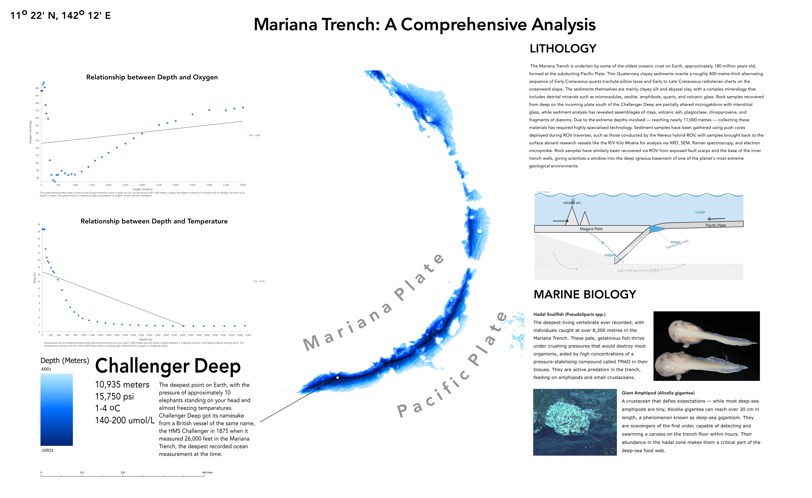
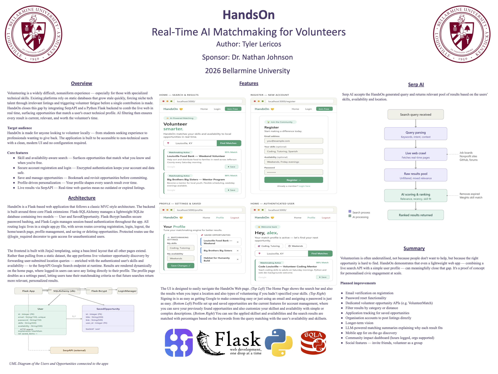

Mariana Trench: A Comprehensive Analysis
2026 | Bellarmine University
My senior GIS project that dove deep into the world's deepest ocean trench, the Mariana Trench. Using ArcGIS and Illustrator, I studied subjects like the biology of abyssal sea creatures, lithology at the bottom and the chemistry of the water as depth changes. One of my first and favorite projects!

HandsOn: AI Matchmaking for Volunteers
2026 | Bellarmine University
Another senior project under the Computer Science Department, a project that integrated Google's SerpAI webscraping tool to find great results for volunteers to find more tailored events for anyone. It's not yet live service but a link to my github with instructions you can run it yourself!
